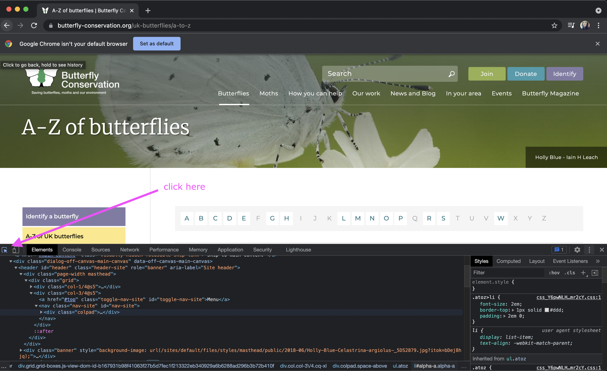

Butterfly Web Scraping
Introduction
The goal of this exercise will be to get practice creating a dataset using web scraping. Web scraping is a immeasurably useful tool that allows you to programmatically, rather than manually, visit websites and copy down data to be added to your own local files.
It’s common to find information on the internet that could be useful, if only the data were available in a tidy, download-able CSV. Web scraping provides a solution to that problem.
Setup
Create a new folder on your commmand line and create a Python virtual environment.
pipinstallbeautifulsoup4andrequests.Create a new Python file.
Spend 5-10 minutes reviewing the documentation for both Beautiful Soup and Requests.
Beautiful Soup (HTML Parsing Library): https://www.crummy.com/software/BeautifulSoup/bs4/doc/
Requests (HTTP Client Library): https://docs.python-requests.org/en/latest/
Explore the Data
Take 5-10 minutes reviewing the butterfly data present on the UK Butterfly Conversation website.
Link: https://butterfly-conservation.org/uk-butterflies/a-to-z
Then, answer the following questions.
How is the site organized? If you want to create a butterfly dataset manually, how would you do it?
Is the data for each butterfly uniform (same properties available for each)?
Which properties are available for each butterfly?
Inspect HTML in Browser
HTML for Species Links
In order to scrape this butterfly data, you will need to be able to grab both the links to each individual butterfly page, as well as the actual individual datapoints within each butterfly page.
Any web scraping project is highly dependent on there being a consistent way to refer to the datapoints and data locations you’re trying to programmatically collect. You should always confirm that the HTML is in a state that will allow you to parse it easily.
Go back to the Butterfly website and make sure you are using the Chrome web browser. Then, right click in on the “A-Z” page and click “Inspect”. This will open a panel where you can look at the HTML structure for this webpage.
Next, you will use the Element Inspector to see what the HTML looks like for the link to each individual butterfly profile page. Click the element inspector icon as shown in the screenshot below.
Then, click on 2-3 of the Butterfly species links on the A-Z page. This should reveal the HTML for the Butterfly link in the Element inspector pane.
What is similar about the HTML for each Butterfly species link? Are all of the links wrapped in a similar element? Do they all have a similar class? What could you use to programmatically select ALL the links?
HTML for Individual Butterfly Data
Now, let’s inspect the HTML for an actual Butterfly’s profile page. Click the link for the Black Hairstreak butterfly, copied below for your convenience.
https://butterfly-conservation.org/butterflies/black-hairstreak
Similar to the previous section, right click on the page and click “Inspect”. This will again open the panel to show the HTML for this webpage.
Hover around the different data points and examine how the structure of the page works under the hood.
How could you consistently locate the “Size and Family” data? Is it marked with a “class”? Does it always appear after a similar heading? Or is there some other identifier?
How could you consistently locate the “Lifecycle” data?
How could you consistently locate the URL for the main image on the page?
In the next few sections, you will use your general knowledge of the HTML structure for the data in order to systematically parse and collect this data using Python.
Produce a list of all butterfly profile links
The first step in this scraping project will be to create a list of all of the links to each individual butterfly page.
You could do this manually by copying and pasting all of the butterfly links from the A-Z page, but it’s much easier to accomplish this task using Requests and Beautiful soup!
First, we import those libraries to use.
import requests
from bs4 import BeautifulSoup
In your new Python file, you will first request the HTML for the A-Z page using requests.
r = requests.get("https://butterfly-conservation.org/uk-butterflies/a-to-z")
This produces a Response object which contains a representation of the A-Z webpage we were viewing in the Chrome browser up until now.
Next, we’ll pass the HTML response into BeautifulSoup so that we can do some of the fancy parsing that Beautiful Soup makes possible for web scraping.
r = requests.get("https://butterfly-conservation.org/uk-butterflies/a-to-z")
soup = BeautifulSoup(r.text)
Now, the soup variable contains a nicely parsed, more searchable version of the HTML for
the A-Z page. One of the things that you can do is find all instances of a given HTML element.
For our purpose, let’s search for all the <a> tags on the page, which are hyper links!
links = soup.find_all("a")
Let’s look at all of the URLs (a.k.a. the “href”) for each hyperlink.
for link in links:
print(link.attrs.get('href'))
Hopefully, from this loop, you can see that the links to all of the butterfly pages are within reach.
Let’s make a new list of just the href attributes of each link using a list comprehension.
hrefs = [link.attrs.get('href') for link in links]
Then, let’s slice that list to include only the links that seem to go to butterfly profile pages. This can be deduced through a bit of trial and error, skipping over the href links that clearly are not individual butterfly pages, such as “/butterflies/why-butterflies-matter” and “#alpha-a”.
butterfly_pages = hrefs[39:100]
Now, the only thing left is to add the full domain name to the front of each of the URLs we found. When you click on a Butterfly from the A-Z page, the URL looks like this in our browser:
https://butterfly-conservation.org/butterflies/chalk-hill-blue
We have everything in there except the domain name, https://butterfly-conservation.org.
So, we can use another list comprehension to create “real” URLs.
butterfly_pages = hrefs[39:100]
urls = ["https://butterfly-conservation.org/" + page for page in butterfly_pages]
Great! Now you should have a list of all of the URLs for each butterfly page. We will use Beautiful Soup and requests in the next section (again) to get into the data on each individual page so we can start building the dataset.
Parse a single butterfly page
In this section, we’ll request the HTML for a single butterfly, and produce some Beautiful Soup code to be able to grab a few data points from the HTML structure.
Eventually, we will want to grab the data for each butterfly profile page, so this is a good use case for a function! Here is a starter function.
def get_butterfly(url):
"""Request and parse a single butterfly profile page, return a dict of data."""
r = requests.get(url)
soup = BeautifulSoup(r.text)
Initially, our function will take in a single URL, such as the URL to the Chalk Hill Blue butterfly, and produce a dictionary of data about that butterfly. We’ll call our function like this:
data = get_butterfly("https://butterfly-conservation.org/butterflies/chalk-hill-blue")
First, let’s find the name on the page. Thankfully, the name of each butterfly species can
be found inside the <h1> element on the page, and there is only one! So, we can find
the name using the Beautiful Soup find function.
h1 = soup.find("h1")
print(h1)
If you run the code above, you get something that looks like this: <h1><span>Species Name</span></h1>.
We’ll want to just peel off the name text from within that, which we can do with the following:
h1 = soup.find("h1")
name = h1.text
name = name.strip() # strip off whitespace at end of name
So, returning to the get_butterfly function, here is how it should look at this point.
def get_butterfly(url):
"""Request and parse a single butterfly profile page, return a dict of data."""
r = requests.get(url)
soup = BeautifulSoup(r.text)
h1 = soup.find("h1")
name = h1.text
name = name.strip() # strip off whitespace at end of name
return {'name': name}
Let’s continue to build out the function. You can find the <li> element that has the
data for “Family” with the following Beautiful Soup code.
family = soup.find("li", text=re.compile(r'Family:*'))
This produces the entire element– <li>Family: Blues</li>. We can use the following
helper function to peel off JUST the data that comes after the label Family: from this element.
def peel_data_from_element(element):
just_text = element.text
return just_text.split(': ')[1]
So, returning to the get_butterfly function, here is how it should look, assuming the peel_data_from_element function is defined in the same file.
def get_butterfly(url):
"""Request and parse a single butterfly profile page, return a dict of data."""
r = requests.get(url)
soup = BeautifulSoup(r.text)
h1 = soup.find("h1")
name = h1.text
name = name.strip() # strip off whitespace at end of name
family = soup.find("li", text=re.compile(r'Family:*'))
family_data = peel_data_from_element(family)
return {'name': name, 'family': family_data}
Call this function with a few butterfly profile URLs and make sure it works. Then, try to modify the function to also find the data for Size and Wing Span. As a hint, you can follow the exact pattern of code that worked for the Family data. Hover below to see the completed function if you need help.
get_butterfly function
def get_butterfly(url):
"""Request and parse a single butterfly profile page, return a dict of data."""
r = requests.get(url)
soup = BeautifulSoup(r.text)
family = soup.find("li", text=re.compile(r'Family:*'))
size = soup.find("li", text=re.compile(r'Size:*'))
wing_span = soup.find("li", text=re.compile(r'Wing Span:*'))
return {
'name': name,
'family': peel_data_from_element(family),
'size': peel_data_from_element(size),
'wing span': peel_data_from_element(wing_span),
'url', url,
}
def peel_data_from_element(element):
just_text = element.text
return just_text.split(': ')[1]
Produce a CSV of butterfly data
First, review how to generate CSVs in Python. The documentation is a great place to start.
Link to CSV Writer docs: https://docs.python.org/3/library/csv.html#csv.writer
Using the list of Butterfly page links from the first part of the exercise, loop over each link and collect a list of dictionaries that contains the data for each butterfly. It’s a good idea to store this code in a new function, called process_each_link.
Then, write a new function called write_csv that loops over the list of dictionaries and writes a new row to a CSV file for each butterfly page. The CSV should be formatted like this
name,url,family,wing span,size.
Further Study
You can continue to practice web scraping with either of the two options.
Add more data to the butterfly dataset using BeautifulSoup.
Produce another dataset from a site of your choice. E-commerce sites tend to be good sites for practicing web scraping.